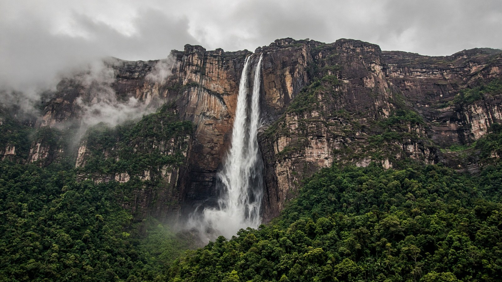

الأمريكتان
فنزويلا
Venezuela
أنجيل والأنديز.
- العاصمة
- كاراكاس
- نظام الحكم
- جمهورية
- التأسيس / الاستقلال
- 5 يوليو 1811
- النوع
- جمهورية
منذ التأسيس
استقلت فنزويلا في 5 يوليو 1811. عاصمتها كاراكاس.
معالم
- طبيعةشلال أنجيل
أعلى سقوط.
- معماركاراكاس
العاصمة.
- طبيعةلوس روques
كاريبي.